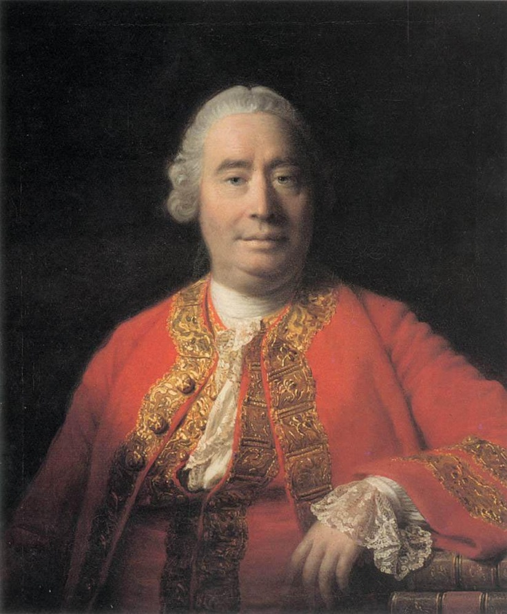

Who Was David Hume?
David Hume (1711–1776) was a Scottish philosopher, historian, and essayist whose work profoundly shaped modern discussions of knowledge, causation, skepticism, morality, religion, and human nature. A major figure of the Scottish Enlightenment, he is widely regarded as one of the greatest philosophers in the tradition of British empiricism, alongside thinkers such as John Locke and George Berkeley.
Hume's philosophy begins with a fundamental question: what can human beings actually know, and how do the mind and its experiences produce our beliefs? Rather than beginning with abstract metaphysical principles, Hume attempted to investigate human nature through the observation of perception, imagination, memory, emotion, habit, and reasoning. His early philosophical project famously sought to apply an experimental method to the study of human beings.
His investigations led to some of the most influential arguments in modern philosophy, particularly concerning causation and induction. Hume argued that experience does not reveal a necessary connection between causes and effects; instead, repeated experience leads the mind to form expectations through custom or habit. This argument raised a profound question about how our beliefs about the future and the unobserved world can be rationally justified.
Hume also developed influential accounts of the self, morality, religion, and the passions. He questioned whether introspection reveals a permanent and unchanging self, and he argued that moral judgments depend fundamentally on human sentiments rather than reason alone. His philosophy is therefore often described as empiricist, skeptical, and naturalistic: it investigates the limits of human understanding while explaining many of our beliefs and practices through the ordinary workings of human nature.
Although Hume was controversial during his lifetime, his influence has been immense. His philosophical skepticism challenged traditional assumptions about metaphysics and knowledge, while his naturalistic study of the mind helped shape later philosophy and psychology. Immanuel Kant famously acknowledged Hume's importance to the development of his own philosophy, and Hume's ideas continue to influence debates in epistemology, ethics, philosophy of religion, and the philosophy of mind.
David Hume: Quick Facts
- Full name — David Hume
- Born — 1711, Edinburgh, Scotland
- Died — 1776, Edinburgh, Scotland
- Period — Early Modern Philosophy and Scottish Enlightenment
- Tradition — British Empiricism
- Major philosophical subjects — Epistemology, empiricism, skepticism, causation, induction, philosophy of mind, ethics, politics, and philosophy of religion
- Major work — A Treatise of Human Nature
- Important work — An Enquiry concerning Human Understanding
- Ethical work — An Enquiry concerning the Principles of Morals
- Religious work — Dialogues concerning Natural Religion
- Best-known philosophical problems — The problem of induction, causation, personal identity, skepticism, and the relationship between reason and passion
David Hume's Early Life and Historical Background
```
David Hume was born in Edinburgh in 1711 into a Scottish family of modest means and spent much of his childhood at Ninewells, the family's estate in the Scottish Borders near Berwickshire. His father died when Hume was still a child, and his mother, Katherine Falconer, played an important role in the education and upbringing of Hume and his siblings.
Hume grew up during the intellectual transformation known as the Enlightenment, when European thinkers increasingly examined knowledge, science, religion, politics, and human nature through critical inquiry. Traditional authority was being questioned, while philosophers sought new methods for understanding both the physical world and the institutions of human society.
The scientific achievements associated with Isaac Newton were especially important to the intellectual atmosphere in which Hume developed his philosophy. Hume did not simply attempt to apply Newton's physical laws to the mind, but he admired the success of systematic empirical inquiry and sought an analogous method for investigating human nature.
This historical setting helps explain Hume's distinctive philosophical ambition. Rather than beginning with theological doctrines or speculative metaphysical systems, he asked how the human mind actually forms ideas, beliefs, expectations, and moral judgments. His philosophy would become one of the most ambitious attempts of the Enlightenment to make human nature itself the foundation of philosophical inquiry.
David Hume's Education and Intellectual Development
Hume entered the University of Edinburgh at an unusually young age, probably around ten or eleven, as was possible within the educational system of his time. He studied subjects that included classical languages, literature, philosophy, mathematics, and natural philosophy. He left the university without taking a degree and continued his education largely through extensive independent reading and reflection.
His family hoped that he would pursue a career in law, but Hume found himself increasingly drawn toward philosophy and literature. He later described discovering what seemed to him a "new scene of thought," and he devoted himself intensely to developing his philosophical ideas. This period of intellectual concentration was also personally difficult and was followed by a serious period of psychological and physical strain.
Hume's interests ranged widely across classical literature, ancient and modern philosophy, history, politics, and the new sciences. Thinkers such as John Locke and George Berkeley were important predecessors in the empiricist tradition, while the skeptical writings of figures such as Pierre Bayle also formed part of the broader intellectual background against which Hume developed his own ideas.
These years of study eventually led Hume toward his central intellectual ambition: the creation of a science of human nature. His mature empiricism would investigate human thought by examining experience, perception, imagination, memory, emotion, and habit rather than beginning with metaphysical principles whose connection with human experience could not be clearly established.
David Hume and the Scottish Enlightenment
David Hume was one of the leading intellectual figures of the Scottish Enlightenment, the remarkable flowering of philosophy, science, history, economics, and social thought that took place in eighteenth-century Scotland. Scottish thinkers were deeply interested in understanding human beings and society through systematic inquiry rather than through inherited authority alone.
Thinkers associated with this movement investigated morality, politics, economics, language, aesthetics, history, and the structure of human understanding. Major figures included Francis Hutcheson, Adam Smith, Thomas Reid, Adam Ferguson, and Hume himself, although they often disagreed sharply about the nature of knowledge, morality, and human reason.
Hume's philosophy fit naturally into this intellectual environment because he treated human beings as part of the natural world and sought explanations for belief and conduct in the workings of human nature. His approach was especially controversial, however, because his skepticism about causation, religion, and metaphysics challenged assumptions that many of his contemporaries considered essential to philosophy and religious belief.
Hume's friendship with Adam Smith became particularly important in the intellectual history of the period. Although their philosophical views were not identical, both thinkers investigated morality and society through the study of human sentiments and social practices. Hume's skepticism also provoked major responses from thinkers such as Thomas Reid, whose philosophy of common sense developed partly in opposition to Humean doubts.
David Hume's A Treatise of Human Nature
A Treatise of Human Nature, published anonymously in 1739 and 1740, was Hume's ambitious early attempt to construct a comprehensive philosophical investigation of human nature. Its full subtitle, Being an Attempt to Introduce the Experimental Method of Reasoning into Moral Subjects, expresses Hume's larger ambition to bring a systematic method of inquiry to the study of the human mind.
The Treatise is divided into three books dealing with the understanding, the passions, and morals. Across these subjects Hume examines impressions and ideas, imagination, causation, belief, personal identity, emotion, motivation, moral judgment, justice, and other fundamental questions concerning human experience.
The work did not achieve the immediate success Hume had hoped for. Hume later famously described it as having fallen "dead-born from the press," although the book did receive some attention and criticism. Its difficult style and highly compressed arguments probably limited its early appeal, while its skeptical conclusions also contributed to Hume's controversial reputation.
Hume later presented parts of the project in a different and more accessible form through An Enquiry concerning Human Understanding and An Enquiry concerning the Principles of Morals. The Enquiries are not simply shortened copies of the Treatise, however; they revise and reorganize important parts of his earlier work and remain central texts for understanding his mature philosophy.
Nevertheless, the Treatise contains some of Hume's deepest and most original philosophical arguments. It remains indispensable for understanding his theory of the mind, his account of the passions, his analysis of personal identity, and his naturalistic attempt to explain how human beliefs and moral practices arise.
Hume's Science of Human Nature
Hume's larger philosophical project was to develop a science of human nature. He believed that the study of the human mind was fundamental because every other field of inquiry is ultimately pursued by human beings using human faculties of perception, reasoning, imagination, and judgment.
Instead of asking only what human beings ought ideally to believe, Hume investigated how people actually form beliefs. He examined perception, memory, imagination, habit, emotion, and association as natural features of human cognition, seeking explanations grounded in the observable operations of the mind.
This approach is often described as philosophical naturalism. Hume does not attempt to explain every human belief by proving that it is rationally justified; he also asks what psychological mechanisms produce that belief. This distinction is crucial to his treatment of causation, induction, personal identity, morality, and religion.
Hume's project makes him an important precursor to later developments in psychology and cognitive science, although he should not simply be treated as a modern scientist before his time. His work remains philosophical in its methods and questions, but its sustained attention to mental processes helped establish a powerful naturalistic tradition in the study of human thought.
What Is David Hume's Empiricism?
David Hume's empiricism holds that the contents of human thought must ultimately be understood in relation to experience. Hume investigates the mind by asking how its perceptions arise and how complex thoughts are formed from more basic elements of sensation and reflection.
A central principle of Hume's philosophy is often called the Copy Principle: ideas are ultimately derived from impressions. Impressions are the more vivid perceptions of sensation and feeling, while ideas are less forceful perceptions that occur in thinking, memory, and imagination. Hume uses this principle as a way of investigating what philosophical concepts actually mean.
Hume's empiricism is therefore more radical than the simple claim that experience is useful for gaining knowledge. He repeatedly asks whether a supposed idea can be traced to an appropriate experiential source. When philosophers use obscure concepts without being able to explain how those concepts arise in experience, Hume believes there is reason for serious philosophical suspicion.
This approach places Hume within the tradition of British empiricism associated with John Locke and George Berkeley, while also pushing empiricism toward a more skeptical examination of knowledge. Hume's investigations eventually raise doubts about whether experience itself can rationally justify many of the beliefs that human beings naturally and inevitably hold.
Hume therefore transformed empiricism into a broader investigation of both the origins and the limits of human understanding. His philosophy asks not only where our ideas come from, but also what kinds of claims human reason can legitimately establish about the world beyond our immediate experience.
David Hume's Impressions and Ideas
One of the most important distinctions in Hume's theory of the mind is between impressions and ideas. Impressions are the more forceful and vivid perceptions we experience, including sensations as well as internal feelings and emotions. Hume further distinguishes impressions of sensation from impressions that arise through reflection on our mental life.
Ideas are less vivid perceptions that occur when we think, remember, or imagine. The memory of a pain, for example, normally lacks the force and immediacy of the pain itself. Hume argues that ideas are generally derived from corresponding impressions, even though the mind can combine and rearrange simpler ideas into more complex thoughts.
Hume uses this distinction as an important philosophical method. When a concept appears obscure, he asks what impression gives rise to the idea involved. This question becomes a powerful tool for examining traditional philosophical concepts and for exposing terms whose meaning cannot be clearly connected with human experience.
The distinction between impressions and ideas therefore provides a foundation for Hume's empiricist theory of the mind. It also helps explain why his philosophy gives such importance to perception and psychological experience when investigating apparently abstract questions about causation, the self, morality, and religion.
Hume's Theory of Association of Ideas
Hume argues that the mind does not experience ideas as completely disconnected elements. Human thought naturally moves from one idea to another according to recognizable principles of association, helping to explain the apparent order and continuity of imagination and ordinary thinking.
Hume identifies three principal associative relations: resemblance, contiguity in time or place, and cause and effect. A portrait may lead us to think of the person it resembles; a room may bring another nearby room to mind; and the thought of one event may lead naturally to the thought of an event that usually accompanies or follows it.
Association is especially important because it provides a naturalistic explanation of mental transitions that philosophers might otherwise attribute to purely abstract principles of reason. The imagination has its own regular tendencies, and these tendencies play an important role in the formation of beliefs and expectations.
Hume's account of association became influential in later psychology and theories of learning. More importantly for his own philosophy, it shows how complex patterns of thought can arise from the interaction of relatively simple mental perceptions without requiring the mind to possess an unlimited power of rational insight.
What Is Hume's Fork?
Hume's Fork is the later name commonly given to Hume's distinction between relations of ideas and matters of fact. The distinction is one of the most important features of his epistemology because it separates two fundamentally different kinds of reasoning.
Relations of ideas include propositions discoverable through thought or demonstrative reasoning, especially in mathematics and logic. Their truth does not depend upon discovering how the empirical world happens to be. To deny a genuine relation of ideas involves contradiction or an inconsistency in reasoning.
Matters of fact, by contrast, concern existence and the empirical world. Their opposites remain conceivable without contradiction: the claim that the sun will not rise tomorrow is not logically self-contradictory, even though we have powerful experiential reasons for expecting the opposite.
This distinction establishes an important boundary between demonstrative reasoning and empirical inquiry. Hume uses it to challenge metaphysical and theological claims that appear to go beyond both logical demonstration and evidence concerning matters of fact.
David Hume's Theory of Causation
David Hume's theory of causation is among the most influential parts of his philosophy. Hume asks what experience actually reveals when we say that one event causes another and whether we ever directly perceive the necessity that supposedly connects causes with their effects.
When one billiard ball strikes another, for example, we observe the movement of the first ball, contact between the two, and the subsequent movement of the second. We observe temporal order, spatial relations, and repeated patterns of conjunction, but Hume argues that we do not perceive an additional mysterious power called a necessary connection.
Repeated experience of similar sequences nevertheless produces a strong expectation that one kind of event will be followed by another. Through custom or habit, the mind makes an inferential transition from the appearance of what it calls a cause to the anticipated effect. The felt expectation produced by this transition is central to Hume's account of our idea of causal necessity.
Hume does not deny that causal reasoning is indispensable to ordinary life and scientific investigation. His challenge is directed instead at the claim that reason can discover a necessary causal power hidden behind observed events. His analysis therefore transformed later debates about causation, scientific laws, explanation, and the limits of observation.
What Is David Hume's Problem of Induction?
The problem of induction is one of the most famous problems associated with Hume's philosophy. Inductive reasoning moves from what has been observed to conclusions about cases that have not yet been observed, allowing human beings to make predictions about the future and generalizations about the world.
Suppose the sun has risen every day throughout recorded human experience. We naturally expect it to rise tomorrow. Hume asks, however, what rationally justifies the inference from the observed past to the unobserved future. The fact that something has happened repeatedly does not appear to make its future repetition logically necessary.
Hume argues that this inference cannot be justified purely through demonstrative reasoning. The proposition that nature might change or that the future might differ from the past does not contain a logical contradiction. Reason alone therefore cannot demonstrate that the future must resemble the past.
Nor can the reliability of induction be justified simply by appealing to its previous success. To argue that induction will continue to work because it has worked in the past already assumes the very principle at issue: that past regularities provide reliable guidance concerning the future. This reveals the circular difficulty at the heart of attempts to give induction a purely rational justification.
Hume does not conclude that human beings should stop making inductive inferences. Instead, he explains our tendency to expect the future on the basis of the past through custom and habit, natural principles of human psychology that operate whether or not philosophy can provide a demonstrative justification for them. The problem remains central to epistemology and the philosophy of science.
What Was David Hume's Skepticism?
David Hume's skepticism concerns the limits of human reason and the extent to which philosophical claims can be justified. His skepticism does not simply mean that he believed nothing could be known or that ordinary life was impossible. Instead, he investigates the gap between what human beings naturally believe and what reason can strictly demonstrate.
Hume shows that philosophical reflection can produce powerful doubts about causation, induction, the external world, and personal identity. Yet he also emphasizes that human beings cannot remain permanently trapped in abstract skepticism. Nature, habit, and the ordinary demands of life continually return us to belief and practical action.
For this reason, Hume is often associated with mitigated or moderate skepticism. Rather than demanding impossible certainty, this attitude encourages intellectual modesty and careful attention to the kinds of evidence appropriate to different questions. Philosophers should recognize the limits imposed by human cognitive capacities.
Hume's skepticism is therefore closely connected with his empiricism and naturalism. He investigates what experience can genuinely support while also explaining why human beings continue to hold many beliefs that are not founded upon strict demonstrative reasoning. His skepticism is both a critique of philosophical overconfidence and an investigation of the natural conditions of human belief.
David Hume and the Problem of the External World
Hume also examines our belief in an independently existing external world. Ordinary people naturally believe that physical objects continue to exist when they are not being perceived and that the objects we encounter are distinct from the changing perceptions through which they appear to us.
Hume asks how this belief can be philosophically justified if the immediate contents of experience are perceptions. We experience colors, sounds, textures, shapes, and other perceptions, but the philosophical claim that these perceptions reveal independently existing and continuously enduring objects raises questions that cannot simply be answered by pointing to a single perception.
He examines several philosophical accounts of external objects and finds serious difficulties in attempts to establish their continued and independent existence through reason alone. At the same time, Hume does not imagine that abstract philosophical doubt can permanently destroy the ordinary human belief that there is a world of objects around us.
Hume therefore emphasizes the psychological basis of this belief. The imagination, memory, and principles of association help produce the sense of continuity and identity that supports our ordinary conception of external objects. This analysis illustrates Hume's broader strategy of explaining natural human beliefs even when their philosophical justification remains difficult.
What Is David Hume's Bundle Theory of the Self?
David Hume's bundle theory of the self challenges the traditional idea that introspection reveals a simple, permanent, and unchanging substance that remains identical throughout a person's life. Hume approaches the question empirically by asking what we actually find when we examine our own conscious experience.
When Hume looks inward, he reports finding particular perceptions: sensations, emotions, thoughts, desires, memories, and other changing experiences. He does not discover an additional simple impression of a permanent self existing independently of these perceptions. Since his empiricism asks for the experiential source of our ideas, this absence is philosophically significant.
Hume therefore describes the mind as a changing collection or bundle of perceptions related through principles such as resemblance and causation. Memory plays an important role in our awareness of psychological continuity, although Hume's detailed account of personal identity is more complex than the simple claim that memory alone creates the self.
Hume's discussion raises a difficult question: if experience reveals only changing perceptions, why do human beings nevertheless experience themselves as persisting persons? His answer gives a major role to the imagination and to the mind's tendency to attribute identity and unity to a succession of related experiences.
This account became highly influential in later debates about personal identity, consciousness, and philosophy of mind. It challenged philosophers to explain personal continuity without simply assuming that an unchanging metaphysical substance lies behind every changing mental state.
David Hume on Reason and the Passions
Hume's philosophy of mind gives a central role to passions and emotions. He rejects the assumption that human action can be explained simply by rational calculation and argues that reason, by itself, does not generate the motivation required for a person to act.
Reason can discover relations between ideas and provide information about matters of fact. It can help us determine how particular actions may lead to particular outcomes. But knowing that an action will produce a result does not by itself explain why a person should desire that result or be motivated to pursue it.
Hume therefore assigns passions a fundamental role in practical life. Desires, emotions, aversions, and other motivational states provide the ends toward which human beings act, while reason often helps determine the means by which those ends can be achieved. His famous formulation that reason is the "slave of the passions" must be understood within this broader theory of motivation.
This position became highly influential in moral psychology and the philosophy of action. It also helps explain why Hume's ethical theory is often described as sentimentalist: moral judgment and motivation cannot be fully understood by treating human beings as purely rational agents detached from emotion and feeling.
What Was David Hume's Philosophy of Ethics?
David Hume's ethics gives a central role to human sentiment, sympathy, character, and social usefulness rather than treating reason alone as the source of morality. Hume asks how human beings actually form judgments about virtue and vice and what qualities naturally attract moral approval or disapproval.
Hume argues that moral distinctions are not discovered merely through logical reasoning. Reason can inform us about facts and consequences, but moral approval and disapproval involve characteristic human sentiments. When we regard a quality as virtuous, we experience or adopt a standpoint from which that quality becomes an object of approval.
This approach is known as moral sentimentalism. Hume's moral philosophy investigates the psychological foundations of moral judgment while also examining the social importance of virtues. Qualities are often approved because they are useful or agreeable either to the person who possesses them or to others affected by them.
Hume's ethical theory also distinguishes between different kinds of virtues. Some dispositions, such as benevolence, are often described as natural virtues, while rules governing institutions such as property and promise-keeping belong to the more socially developed sphere of what he calls the artificial virtues.
His moral philosophy is developed most systematically in Book III of A Treatise of Human Nature and in An Enquiry concerning the Principles of Morals, a work Hume himself regarded very highly. Together these writings made him one of the most important figures in the history of secular and naturalistic moral philosophy.
David Hume on Sympathy, Virtue, and Moral Sentiment
Sympathy is a major concept in Hume's moral philosophy. It refers broadly to the human capacity to be affected by the feelings and conditions of other people, allowing individuals to respond to happiness, suffering, success, and misfortune that they do not directly experience themselves.
Sympathy helps explain how moral evaluation can extend beyond narrow self-interest. Human beings can adopt broader perspectives and respond to the effects that character traits and actions have upon other people. This capacity contributes to the formation of relatively stable patterns of moral approval and disapproval within social life.
Hume argues that virtues commonly attract approval because they are useful or agreeable, either to the person who possesses them or to others. Benevolence and generosity may be valued because they benefit other people, while qualities such as good judgment or cheerfulness can also be appreciated for their usefulness or immediate agreeableness.
Hume's account therefore combines moral psychology with an investigation of human social life. Rather than deriving morality from purely abstract rational principles, he asks why particular qualities become objects of approval for creatures with the psychological and social characteristics that human beings actually possess.
David Hume's Philosophy of Justice
Hume's discussion of justice is closely connected with his analysis of society, human circumstances, and utility. He argues that stable rules concerning property and social cooperation become necessary under conditions in which human generosity is limited and resources are neither so abundant that conflict is unnecessary nor so scarce that cooperation becomes impossible.
Justice is therefore treated as an artificial virtue, meaning not that it is false or unimportant, but that the relevant rules arise through human social conventions rather than operating simply as an immediate natural instinct. These conventions help regulate property, transfer, promises, expectations, and cooperation.
Hume rejects the idea that justice can be understood entirely apart from the circumstances of human life. Rules of justice become valuable because they create stability and mutual advantage within societies composed of individuals who possess both social capacities and competing interests.
His account is therefore an important example of a conventionalist approach to morality and political philosophy. Political and moral institutions can be studied historically and psychologically by examining how practices develop and why they become useful for sustaining human cooperation.
David Hume on Free Will, Liberty, and Necessity
Hume's discussion of liberty and necessity is commonly interpreted as a form of compatibilism. He argues that freedom and causal regularity need not be contradictory, and he attempts to dissolve what he regards as a misleading opposition between human liberty and necessity.
Hume understands necessity primarily through the regularity with which similar motives, characters, and circumstances are associated with similar actions, together with the mind's tendency to infer one from the other. Human conduct may therefore exhibit recognizable patterns without being removed from the sphere of voluntary action.
Liberty, in Hume's account, is broadly understood as the power to act or not act according to the determinations of one's will, without relevant external constraint. A person who acts according to his or her will may therefore be free in this sense even if the will itself belongs within a network of regular causes.
Hume also believes that regular connections between character and action are important for moral responsibility. If actions occurred entirely without any connection to motives or character, praise, blame, punishment, and moral evaluation would lose much of their basis. His analysis remains influential in debates about free will and responsibility.
David Hume's Philosophy of Religion
Religion was one of the most controversial areas of Hume's philosophy. He critically examined miracles, divine providence, the origins of religious belief, and arguments that attempted to establish the existence or attributes of God through reason and observation. His writings made him one of the most important critics of natural theology in the Enlightenment.
Hume's discussion of miracles examines how testimony for an extraordinary event should be weighed against extensive experience of the regularity of nature. His argument does not merely state that miracles are impossible; instead, it raises difficult questions about when testimony could be sufficiently reliable to justify belief in an event that conflicts with exceptionally well-established experience.
In his examination of natural theology, Hume questions whether the order and complexity of nature allow philosophers to infer a deity possessing particular human-like attributes. He subjects the design argument to sustained criticism by asking whether the observed world justifies the conclusions traditionally drawn from it.
His Dialogues concerning Natural Religion, published posthumously in 1779, presents a sophisticated philosophical discussion through fictional speakers who debate design, causation, divine attributes, evil, and the limits of religious inference. The dialogue form makes it difficult to identify every argument with Hume's own final position.
Hume's precise personal religious position remains a subject of scholarly debate, and simple labels such as "atheist" do not capture every complexity of the evidence. What is beyond doubt is that his philosophical treatment of religion was profoundly skeptical and critical, challenging claims that religious doctrines could easily be established through ordinary standards of evidence and reasoning.
Major Works of David Hume
David Hume wrote philosophical works, essays, historical studies, and writings on politics, morality, religion, and economics. During his own lifetime he became particularly famous as an essayist and historian, while later generations increasingly recognized his philosophical works as among the most influential texts in the modern tradition.
- A Treatise of Human Nature — Hume's ambitious early investigation of human understanding, passions, morality, and personal identity.
- An Enquiry concerning Human Understanding — A major presentation of Hume's empiricism, skepticism, causation, induction, miracles, and theory of knowledge.
- An Enquiry concerning the Principles of Morals — Hume's mature account of moral sentiment, virtue, sympathy, utility, and moral evaluation.
- Dialogues concerning Natural Religion — A posthumously published philosophical dialogue examining arguments concerning God, design, and natural religion.
- History of England — Hume's major historical work, which contributed substantially to his reputation as a historian.
- Essays, Moral, Political, and Literary — A collection representing Hume's broader interests in politics, economics, literature, morality, and society.
David Hume's Main Philosophical Ideas
1. Knowledge Begins with Experience
Hume's empiricism investigates how the contents of human thought arise from experience. His distinction between impressions and ideas, together with the Copy Principle, provides a method for asking whether philosophical concepts possess a clear basis in human experience.
2. Causation Is Based on Experience and Habit
We observe regular sequences and repeated conjunctions of events, but Hume argues that we do not directly perceive a mysterious necessary power connecting cause and effect. Repeated experience produces habits of expectation that lead the mind to make causal inferences.
3. Induction Cannot Be Demonstratively Justified
Hume's problem of induction reveals the difficulty of giving a non-circular rational justification for the assumption that unobserved cases will resemble observed ones. Human beings nevertheless rely on such expectations because custom and habit are natural features of the mind.
4. The Self Is Not an Independently Perceived Substance
Introspection reveals changing perceptions rather than a separate impression of a simple and permanent self. Hume therefore investigates personal identity through the relations among perceptions and the imagination's tendency to attribute unity and continuity to experience.
5. Human Action Is Driven by Passion as Well as Reason
Reason can discover facts and relationships and can help identify the means to particular ends, but motivation requires desires, passions, or other affective states. Hume therefore rejects the image of human action as the product of reason alone.
6. Morality Is Closely Connected with Sentiment
Moral approval and disapproval arise through characteristic human sentiments rather than through logic alone. Hume examines why qualities that are useful or agreeable to oneself or others become objects of moral approval within human social life.
7. Philosophy Must Recognize Human Limitations
Hume's skepticism encourages philosophers to distinguish between what can be established through demonstration, what can be supported by experience, and what exceeds the limits of human understanding. This intellectual modesty remains one of the defining features of his philosophical legacy.
David Hume's Influence on Modern Philosophy
David Hume had an enormous influence on later philosophy. His analysis of causation and induction transformed debates about knowledge and scientific reasoning, while his naturalistic account of the mind helped establish a tradition of explaining human belief through psychological processes such as perception, imagination, association, and habit.
Hume also had a profound influence on Immanuel Kant. Kant famously wrote that the memory of David Hume interrupted his "dogmatic slumber" and forced him to reconsider fundamental questions about causation, metaphysics, and the conditions of human knowledge. Kant's critical philosophy can therefore be understood, in part, as a major response to problems raised by Hume.
Hume's influence extended far beyond Kant. His close friend Adam Smith developed influential theories of moral sentiment and political economy, while later thinkers such as Jeremy Bentham drew upon Hume's discussions of utility. Hume also stimulated important criticism, particularly from Thomas Reid and the tradition of Scottish common sense philosophy.
His discussions of human psychology, habit, perception, morality, religion, and causation contributed to later developments in philosophy, economics, psychology, and the philosophy of science. Contemporary debates about the nature of belief, emotion, moral judgment, personal identity, and religious evidence continue to engage with questions that Hume formulated with remarkable clarity.
Hume's analysis of induction remains especially important because modern science constantly moves from observed evidence toward predictions and general theories. His challenge was not simply to deny the value of this practice, but to ask what ultimately justifies it. The difficulty of that question continues to make Hume one of the most important philosophers in the history of epistemology and the philosophy of science.
David Hume's Philosophy of Politics and Government
David Hume's political philosophy applies his broader study of human nature to questions about government, political obligation, social stability, and public institutions. Rather than constructing politics from abstract principles alone, Hume examined how governments and political practices actually develop within particular historical and social circumstances.
Hume was skeptical of the idea that political authority could generally be explained through an original social contract. Most citizens, he argued, have never explicitly agreed to obey their government, and political society cannot realistically depend upon the assumption that every generation has freely entered into such an agreement.
Instead, Hume connected political obligation with the importance of utility, social stability, and established institutions. Governments become necessary because large and complex societies require stable systems capable of maintaining justice, enforcing laws, and coordinating collective life. Political allegiance therefore develops partly from the practical advantages of order and security.
Hume did not believe that every existing government was automatically legitimate or beyond criticism. His political essays compare different institutions and ask which arrangements are more likely to reduce corruption, control faction, protect justice, and promote peace and prosperity. He generally preferred government under stable laws to arbitrary rule based solely on the will of rulers.
His political philosophy is important because it combines historical analysis with a naturalistic understanding of human behavior. Hume's writings on government, commerce, and political institutions helped shape later political thought and formed an important part of the wider intellectual world of the Scottish Enlightenment.
David Hume's Is–Ought Problem
David Hume is closely associated with the distinction between statements about what is and statements about what ought to be. The issue arises in his discussion of morality, where Hume observes that philosophical arguments sometimes move from descriptions of facts to conclusions about moral duties without clearly explaining how that transition has been made.
Statements about what is describe facts, events, or existing conditions. Statements about what people ought to do, by contrast, introduce moral evaluation, obligation, or prescription. Hume drew attention to the fact that these two kinds of statements do not appear to be identical.
The basic problem is that a purely descriptive account of the world does not obviously contain, by itself, a moral command. For example, describing how human beings behave does not automatically establish how they should behave. Some additional moral principle, value, or evaluative standpoint appears necessary to make the transition from fact to obligation.
Later philosophers developed this observation into what is commonly called the is–ought problem or Hume's Law. The precise interpretation of Hume's own argument remains debated, and it is important not to attribute every later formulation of the principle directly to Hume himself.
Nevertheless, the distinction became enormously influential in modern ethics and metaethics. It encouraged philosophers to examine carefully whether moral conclusions can be logically derived from purely factual premises and helped shape later debates about naturalism, moral realism, and the foundations of ethical reasoning.
David Hume on Probability and Belief
Hume's philosophy does not treat human knowledge as a simple choice between absolute certainty and complete ignorance. Much of ordinary life depends upon probability, degrees of confidence, and beliefs formed from incomplete evidence. His analysis of probability is closely connected with his broader account of causation, induction, and human reasoning.
For Hume, beliefs concerning matters of fact depend upon experience and the mind's tendency to associate observed events with expected outcomes. When experience strongly and consistently supports a conclusion, our confidence is greater. When the evidence is mixed or variable, the mind forms weaker expectations and judgments of probability.
Hume also distinguishes belief from merely imagining or entertaining an idea. The difference is not simply that belief adds a completely new idea to the mind. Instead, belief gives an idea a greater force, vivacity, or firmness, making it psychologically different from a purely fictional possibility.
Probability therefore reveals an important feature of Hume's naturalistic philosophy. Human beings constantly make judgments without possessing demonstrative certainty, and these judgments are shaped by the strength, regularity, and character of previous experience. Reasoning about the world is deeply connected with the psychological processes through which expectations become established.
Hume's analysis remains important because scientific inquiry and ordinary decision-making frequently operate under uncertainty. His philosophy raises the question of how evidence produces rational confidence while also explaining why human beings naturally form beliefs that extend beyond what is immediately present to the senses.
David Hume's Aesthetics and the Standard of Taste
David Hume also made an important contribution to aesthetics, particularly through his essay Of the Standard of Taste. Hume examines a difficult problem: if judgments of beauty depend upon human feeling and sentiment, how can some works of art nevertheless be regarded as better than others?
Hume argues that beauty is not simply a property that exists independently of every observer in the same way that physical size or shape may be measured. Aesthetic judgment involves the sentiment or response experienced by a person encountering an object, artwork, or performance. In this sense, beauty is closely connected with human perception and feeling.
Yet Hume does not conclude that every judgment of taste is equally reliable. He argues that some people develop greater abilities as critics through practice, comparison, careful attention, sound understanding, and freedom from prejudice. Such qualities allow a person's aesthetic responses to become more refined and dependable.
This leads to Hume's famous idea of the true judge. A true judge is not someone who possesses an infallible formula for beauty, but a person whose taste has been cultivated through experience and whose judgment is less distorted by ignorance, prejudice, or careless observation.
Hume's theory is significant because it attempts to explain how aesthetic judgment can be grounded in subjective human sentiment without collapsing into the claim that every opinion is equally valuable. His account remains influential in debates about artistic criticism, cultural standards, and the relationship between subjective experience and critical judgment.
David Hume's Natural History of Religion
In The Natural History of Religion, David Hume approaches religion from a different perspective from his discussions of miracles and arguments for God's existence. Instead of asking primarily whether particular religious beliefs are true, he investigates the psychological and historical origins of religious belief.
Hume argues that human beings naturally experience uncertainty about events that affect their lives, including illness, disaster, prosperity, and misfortune. Feelings such as hope and fear, together with the human tendency to search for causes and to attribute agency, can encourage belief in invisible powers influencing the world.
His account also examines the historical relationship between polytheism and monotheism. Hume presents a speculative account of how religious ideas may develop and change as human beings imagine different invisible agents and gradually construct broader conceptions of divine power.
Hume's approach is naturalistic because it attempts to explain religion through ordinary features of human psychology and social history rather than assuming that religious belief must originate directly from rational proof. This does not make the work a modern scientific history of religion; its historical reconstructions reflect many assumptions and limitations of eighteenth-century scholarship.
The importance of The Natural History of Religion lies in its attempt to treat religion as a phenomenon that can itself be studied and explained. Hume helped establish a tradition of examining religious belief through psychology, history, and human behavior, an approach that would later become important in the academic study of religion and the social sciences.
Frequently Asked Questions About David Hume
Who was David Hume?
David Hume was an eighteenth-century Scottish philosopher, historian, and essayist best known for his empiricism, skepticism, theory of causation, problem of induction, moral philosophy, and philosophy of religion.
What is David Hume famous for?
David Hume is particularly famous for his analysis of causation, the problem of induction, empiricism, skepticism, the bundle theory of the self, moral sentimentalism, and his criticism of arguments for religious belief.
What was David Hume's philosophy?
David Hume's philosophy combines empiricism, skepticism, and naturalism. He investigated human knowledge through experience and examined how perception, imagination, habit, emotion, and association influence human belief.
Was David Hume an empiricist?
Yes. Hume was one of the major British empiricists. His empiricism emphasizes experience as the foundation for human knowledge and challenges philosophical concepts that cannot be connected to experience.
What is David Hume's problem of induction?
The problem of induction asks how we can rationally justify inferences from past experience to future or unobserved events. Hume argues that the assumption that the future will resemble the past cannot itself be established through demonstrative reasoning without circularity.
What did David Hume believe about causation?
Hume argued that experience reveals repeated patterns or constant conjunctions between events rather than directly revealing a necessary connection. Our expectation of causal relationships is strongly connected with custom and habit.
What is Hume's Fork?
Hume's Fork distinguishes between relations of ideas and matters of fact. Relations of ideas concern demonstrative reasoning, while matters of fact concern empirical claims about the world.
What is David Hume's bundle theory?
Hume's bundle theory holds that introspection does not reveal a simple permanent self independently of experience. Instead, the mind is encountered as a changing collection or bundle of perceptions.
What did David Hume believe about morality?
Hume believed that moral judgments are closely connected with human sentiment. His moral philosophy emphasizes sympathy, usefulness, agreeableness, and the feelings of approval and disapproval through which people evaluate character and conduct.
Did David Hume believe reason controls human action?
Hume gave passions and desires a fundamental role in motivation. Reason can inform us about facts and relationships, but motivation requires desire or passion.
What did David Hume believe about free will?
Hume defended a form of compatibilism in which liberty can coexist with causal regularity. He understood freedom in terms of acting according to one's will without external constraint.
What did David Hume believe about religion?
Hume subjected religious arguments to skeptical examination. He critically discussed miracles, divine providence, natural theology, and arguments from design. His precise personal religious position remains debated by scholars.
What is David Hume's most famous book?
Hume's best-known philosophical works include A Treatise of Human Nature and An Enquiry concerning Human Understanding. The Enquiry contains particularly influential discussions of causation, induction, skepticism, miracles, and human knowledge.
How did David Hume influence Kant?
Hume's skepticism about causation, metaphysics, and the foundations of knowledge deeply influenced Immanuel Kant. Kant regarded Hume's challenge as an important stimulus for reconsidering the foundations of philosophy.
Why is David Hume important today?
David Hume remains important because his questions about evidence, causation, induction, personal identity, morality, and religious belief continue to appear in contemporary epistemology, philosophy of science, philosophy of mind, ethics, and philosophy of religion.
Related Modern and Enlightenment Philosophers
Explore other major philosophers connected with empiricism, rationalism, the Enlightenment, modern philosophy, ethics, epistemology, and metaphysics.
Related Areas of Philosophy
David Hume's philosophy connects modern epistemology with empiricism, skepticism, philosophy of mind, ethics, metaphysics, philosophy of science, and philosophy of religion.
Why David Hume Still Matters
David Hume occupies a central position in the history of modern philosophy because he forced philosophers to examine how human beings actually acquire knowledge and form beliefs. His empiricism placed experience at the center of philosophical investigation, while his skepticism exposed the limitations of purely rational attempts to justify many ordinary beliefs.
His analysis of causation and induction remains particularly influential. Hume showed that our expectations about future events depend upon past experience, while raising the difficult question of what justifies the assumption that the future will resemble the past.
Hume's philosophy also transformed discussions of the self, human motivation, morality, religion, and free will. His view that human beings are shaped by perception, habit, emotion, and social interaction helped move philosophy toward a more naturalistic study of human nature.
From the Treatise of Human Nature to the Enquiry concerning Human Understanding, Hume's work continues to influence epistemology, philosophy of science, philosophy of mind, ethics, and philosophy of religion. Understanding David Hume is therefore essential for understanding the development of modern philosophy and Enlightenment thought.
Explore Great Philosophers